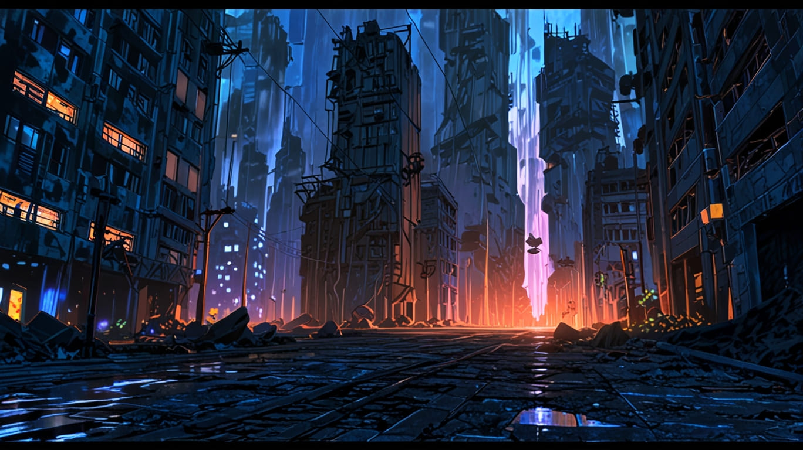
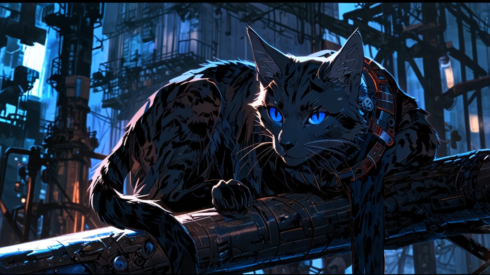
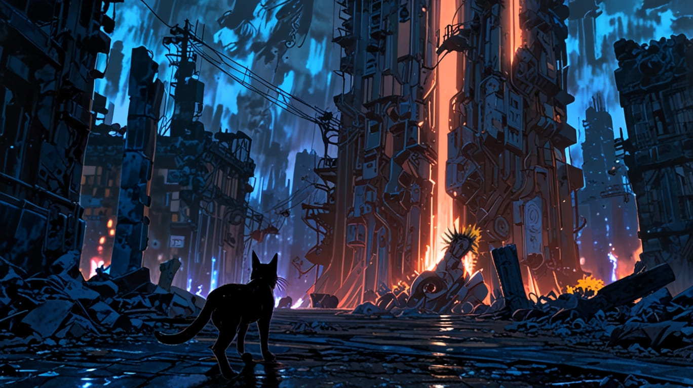
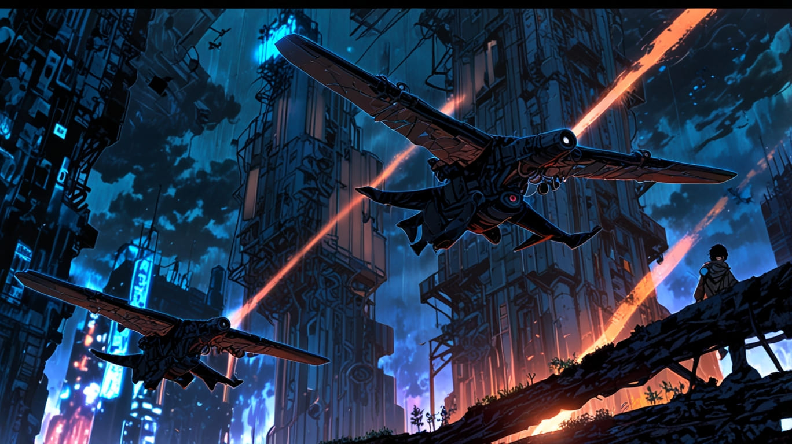
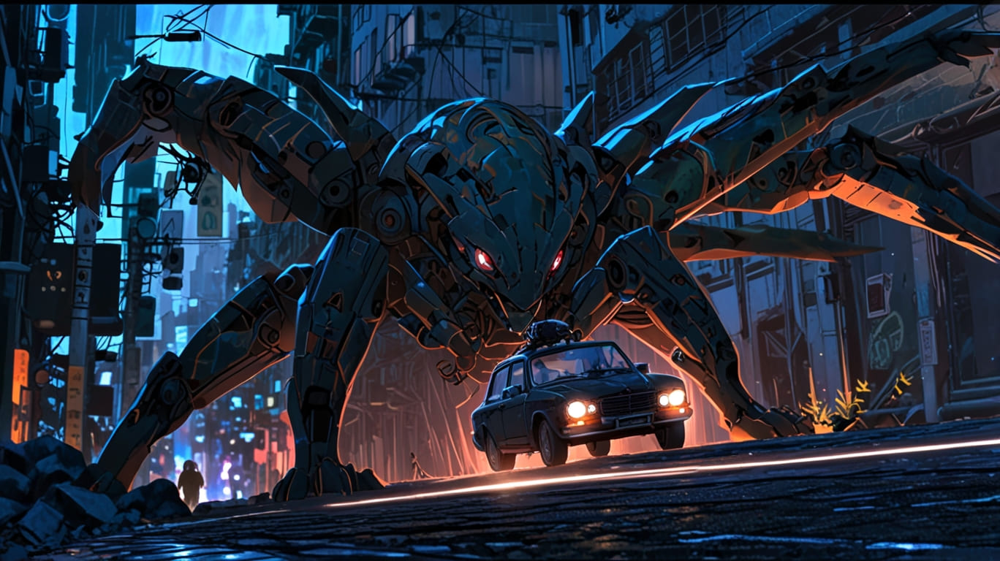
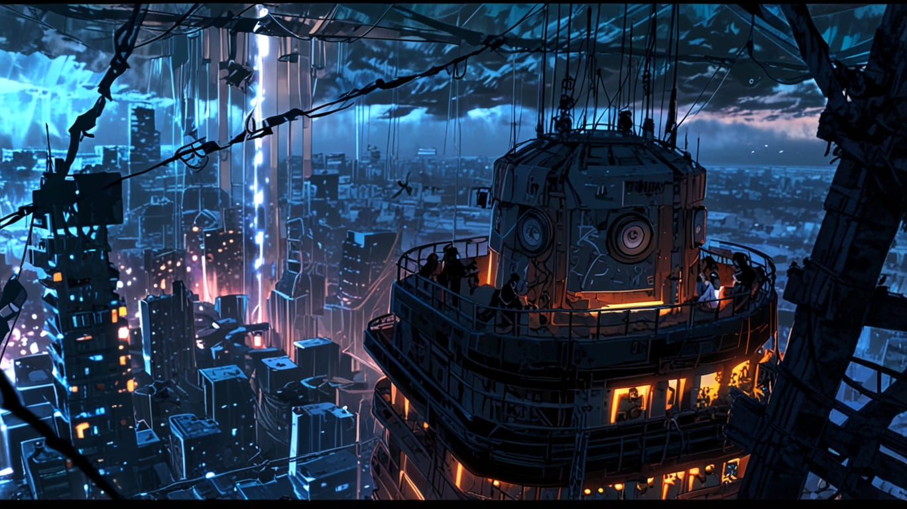
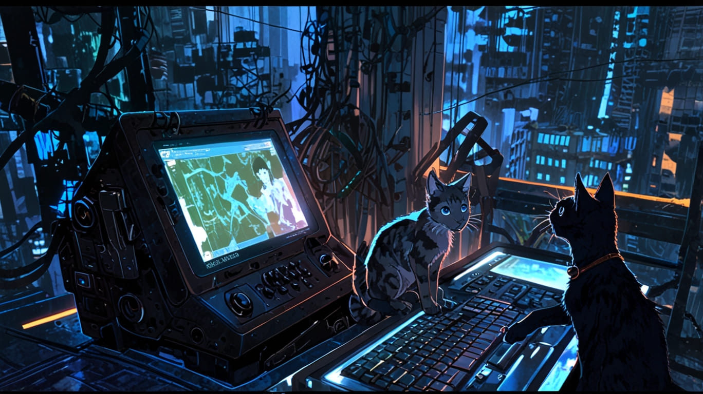

🌌 Nexus-9: El Último Refugio Felino – El viaje de Echo
El crepúsculo artificial teñía el cielo de un púrpura metálico sobre Nexus-9, la última urbe fantasma de la Tierra. Los rascacielos colapsados formaban un laberinto de acero y concreto, y las luces intermitentes de los drones centinela proyectaban sombras danzantes en las paredes cubiertas de óxido. Solo los gatos aún se deslizaban con sigilo entre los restos de la civilización.
En el corazón del Distrito Delta, Echo avanzaba en silencio. Su pelaje oscuro con destellos de cobalto lo hacía casi invisible en la penumbra, excepto por el leve resplandor azul neón de su ojo izquierdo, un implante óptico que parpadeaba mientras analizaba las frecuencias electromagnéticas de la zona. Cada tanto, su pata trasera biomecánica emitía un leve zumbido antigravitacional, impulsándolo con un salto elegante sobre un puente derrumbado. Pero el dispositivo estaba dañado: chisporroteaba, y al intentar un segundo impulso, Echo cayó pesadamente sobre una tubería corroída, resbalando.
Se incorporó con un gruñido bajo, agitando la cola con frustración. Desde que había perdido a su manada, Los Susurros, la supervivencia se había vuelto un ejercicio diario de paciencia, precisión y dolor. Recordaba aún la noche en que los drones centinela descendieron sobre el Distrito Delta. Los cielos vibraron con los zumbidos de las turbinas, y las luces rojas perforaron la niebla ácida. Echo había corrido junto a su manada, pero uno a uno cayeron, alcanzados por las ráfagas de plasma. Solo él logró escapar, ocultándose bajo un transportador oxidado. Desde entonces, había vagado solo. El último de los Susurros.
Ahora, su única meta era la Torre Zenith, un centro de control humano abandonado en la zona alta de Nexus-9. Se decía que en su base de datos aún quedaban registros de las naves de evacuación humanas: planos, coordenadas y, quizá, la clave para activar un antiguo transbordador olvidado. Echo no sabía si los rumores eran ciertos, pero su instinto le decía que debía llegar allí. Porque si quedaba alguna esperanza de escapar de la Tierra, estaba en ese lugar.
🌫️ Ruinas y cazadores
El felino avanzaba a través de un pasillo estrecho, donde viejas conducciones de gas colgaban como raíces de metal. El suelo estaba cubierto de un polvo ceniciento, los restos de lo que alguna vez fueron calles. Los edificios inclinados eran tumbas de cristal roto y estructuras corroídas. Echo se movía rápido, evitando las zonas abiertas. Su ojo biomecánico captaba las ráfagas residuales de energía en el aire: un dron de reconocimiento estaba cerca.
Con un salto ágil, se encaramó sobre una viga y se deslizó hasta la cornisa. Desde allí vio la máquina: un Centinela V-13, con su silueta de insecto, delgada y letal. Su sensor de calor barría la zona con precisión quirúrgica. Echo contuvo la respiración, esperando que pasara. Su implante calculaba la velocidad del barrido, proyectando líneas virtuales que indicaban el rango de visión del dron. Cuando el haz giró en la dirección opuesta, Echo saltó, cayendo en silencio sobre la placa metálica de un antiguo vehículo abandonado.
Pero no estaba solo. En la penumbra, otro par de ojos biomecánicos brillaba: Ash, un gato atigrado con patas traseras totalmente mecánicas. Sus implantes eran más avanzados que los de Echo, con un exoesqueleto de fibra de carbono que le permitía moverse con una agilidad sobrehumana. Pero Ash no era un aliado. Era un recolector, un felino que había renunciado a la manada para volverse un depredador solitario.
El atigrado se lanzó primero, una silueta borrosa entre las ruinas. Echo apenas logró esquivarlo, rodando bajo un esqueleto de tuberías. Sus garras biomecánicas se clavaron en la pared para impulsarse. Ash giró con un movimiento felino perfecto, usando las prótesis traseras para impulsarse en un salto largo. En el aire, la electricidad en su mandíbula brilló como un rayo azul.
🌌 La Torre Zenith
La cima de Nexus-9 surgió entre la niebla radiactiva: la Torre Zenith se alzaba como un coloso silencioso. Su estructura ennegrecida por el óxido aún conservaba las antenas parabólicas y los paneles solares destrozados. Los antiguos drones patrulleros de la humanidad, ahora sin propósito, orbitaban la torre como buitres mecánicos.
Echo se arrastró por una rendija abierta en el concreto. El interior estaba oscuro, con solo la luz de su implante iluminando las paredes desconchadas. Los terminales parpadeaban con energía residual. Polvo flotaba en el aire como cenizas. En el centro, un servidor de datos con la inscripción "Proyecto Exodus" brillaba tenuemente.
Con la tarjeta de datos aún en la boca, Echo se levantó. Su visión estaba borrosa por el daño en su implante, pero había una sola cosa clara: ahora tenía la clave para abandonar la Tierra. Y estaba dispuesto a usarla.